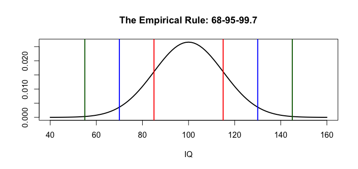

- ① Measures of Variability: The Standard Deviation
- ② Normal Distributions & the Empirical Rule
- ③ Connecting Center, Spread, & Shape
- ④ Kurtosis & Skew
標準偏差を手順どおりに計算する
donors <- read.csv("donors.csv") my_data <- c(0, 5, 5, 5, 10, 50) my_mean <- mean(my_data) dev <- my_data - my_mean # 1. 平均からのずれ（偏差） dev dev^2 # 2. 2乗する sum(dev^2) # 3. 合計する my_var <- sum(dev^2) / length(my_data) # 4. 個数で割る＝分散 my_var sqrt(my_var) # 5. 平方根＝標準偏差
偏差をそのまま足すと必ず 0 になるので、2乗してから平均します（分散）。分散は単位が2乗（ドル²）で解釈しにくいので、平方根で元の単位に戻したものが標準偏差です。
R の sd() と値が違う？
var(my_data) sd(my_data)
| 母集団 σ | 標本 s（R の sd()） | |
|---|---|---|
| 割る数 | n | n − 1 |
| 使う場面 | 全体のデータがある | 標本から母集団を推定する（ふつうはこちら） |
上の手計算は n で割った母集団の標準偏差（17.0）、R の sd() は n − 1 で割った標本標準偏差（18.64）です。標本では平均を標本から計算したぶん、ばらつきを小さく見積もりがちなので、n − 1 で割って補正します。
解釈：「このデータの値は、平均からおよそ 18.6 離れているのが典型的」。
sd(c(0, 0, 50, 100, 100)) sd(c(50, 50, 50, 50, 50))
my_data の 50 を 500 にすると、sd は 200 を超えます。正規分布と 68-95-99.7 の経験則
正規分布（normal distribution）は、単峰で左右対称の釣鐘型の分布です。平均 μ と標準偏差 σ の2つで形が決まり、X ~ Normal(μ, σ) と書きます。知能指数（IQ）は平均 100・標準偏差 15 のほぼ正規分布になるよう作られています。
curve(dnorm(x, 100, 15), from = 40, to = 160, lwd = 2, xlab = "IQ", ylab = "", main = "The Empirical Rule: 68-95-99.7") abline(v = c(85, 115), col = "red", lwd = 2) abline(v = c(70, 130), col = "blue", lwd = 2) abline(v = c(55, 145), col = "darkgreen", lwd = 2)

| 範囲 | 割合（約） | IQ ~ N(100, 15) |
|---|---|---|
| μ ± 1σ | 68% | 85〜115 |
| μ ± 2σ | 95% | 70〜130 |
| μ ± 3σ | 99.7% | 55〜145 |
この数字はどこから来るのでしょう。正規分布の面積を R で計算すると確かめられます（pnorm() は M3 で詳しく）。
pnorm(1) - pnorm(-1) pnorm(2) - pnorm(-2) pnorm(3) - pnorm(-3)
中心・ばらつき・形をつなげる
平均・中央値・標準偏差がわかれば、グラフがなくても形をある程度推理できます。
| 分布 | 平均 | 中央値 | SD | 推理 |
|---|---|---|---|---|
| A | 20 | 20 | 5 | 平均 ≈ 中央値 → ほぼ対称 |
| B | 20 | 15 | 5 | 平均 > 中央値 → 右に歪む |
| C | 10 | 10 | 8 | 最小値が 0 なら、平均から 3SD 左（−14）まで伸ばせない → 正規分布ではありえない |
| D | 30 | 30 | 6 | 30 − 3×6 = 12 > 0 → 正規分布の可能性あり |
c(mean = mean(donors$totalGivingAmount), sd = sd(donors$totalGivingAmount)) mean(donors$totalGivingAmount) - 3 * sd(donors$totalGivingAmount)
歪度と尖度
歪度（skewness）は非対称の度合いです。負なら左に歪む、0 なら対称、正なら右に歪む。尖度（kurtosis）は正規分布と比べた裾の重さ・とがり具合で、正規分布の尖度は 3 です（3 を引いた「超過尖度」で 0 と表す流儀もあります）。
| 尖度 | 名前 | 特徴 |
|---|---|---|
| 3 より大きい | 急尖（leptokurtic） | 中心がとがり、裾が重い（極端な値が出やすい） |
| 3 | 正規（mesokurtic） | 正規分布と同じ |
| 3 より小さい | 緩尖（platykurtic） | 中心が平ら、裾が軽い |
パッケージ（psych の describe() など）でも出せますが、定義どおり計算することもできます。
skew <- function(x) { x <- x[!is.na(x)]; mean((x - mean(x))^3) / sd(x)^3 } kurt <- function(x) { x <- x[!is.na(x)]; mean((x - mean(x))^4) / sd(x)^4 } round(c(skew_total = skew(donors$totalGivingAmount), skew_wealth = skew(donors$wealthRating), kurt_total = kurt(donors$totalGivingAmount)), 2)
寄付総額は歪度が大きく正（強く右に歪む）、wealthRating は負（左に歪む）。ヒストグラムの見た目と一致します。寄付総額の尖度は 3 を大きく上回り、裾が非常に重い（極端な高額寄付がある）ことを示します。
x <- c(2, 4, 4, 4, 5, 5, 7, 9) の標準偏差を、（1）sd() で、（2）sqrt(sum((x - mean(x))^2) / (length(x) - 1)) で求め、一致を確かめてください。
x <- c(2, 4, 4, 4, 5, 5, 7, 9) sd(x) sqrt(sum((x - mean(x))^2) / (length(x) - 1))
どちらも 2.138。n で割ると 2.0（母集団の標準偏差）になる。